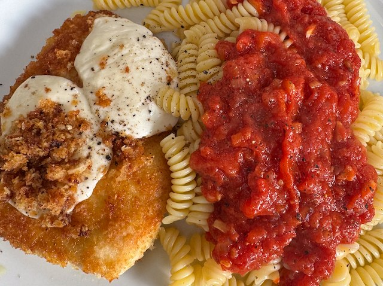

Chicken Parm

From simply recipes. I think chicken parm is meant to be oven baked with the chicken. But folks here complain if the breadcrumb crust get soggy, so this version keeps things separate.
Ingredients
- Sauce
- ½ onion, finley chopped
- olive oil
- 2 garlic cloves, sliced
- 2 400g can tomatoes, chopped
- 1 tsp oregano
- 1 tsp sugar
- ½ tsp chilli flakes
- Chicken
- 4 chicken breast, flattened
- salt
- 2 eggs, beaten
- 100g parmesan, grated
- 100g panko breadcrumbs
- 2 tbsp basil, finley sliced
- 125g mozzarella, sliced
- Pasta
- 500g short pasta
Method
Sauce. Soften the onions on a low heat for about 15 min. Add garlic and fry for 2 min more. Add tomatoes, oregano, sugar and chilli and cook on a blip for 30 min.
Prepare Chicken. Beat the eggs in a bowl. Grate parmesan into breadcrumbs on a plate and mix. Flatten the chicken and salt. Dip in eggs, then breadcrumbs to coat.
Cook Chicken. Heat a pan to hot. Add oil, chicken, turn heat to medium and cook for 5 min. Flip chicken, lay the mozzarella and basil on top, add a bit more oil and cook for 5 min more.
Cook pasta, following packet timings. I use 1.5 litre of water and 1 tbsp salt. Drain.
Mix sauce with pasta, and lay the chicken on top.